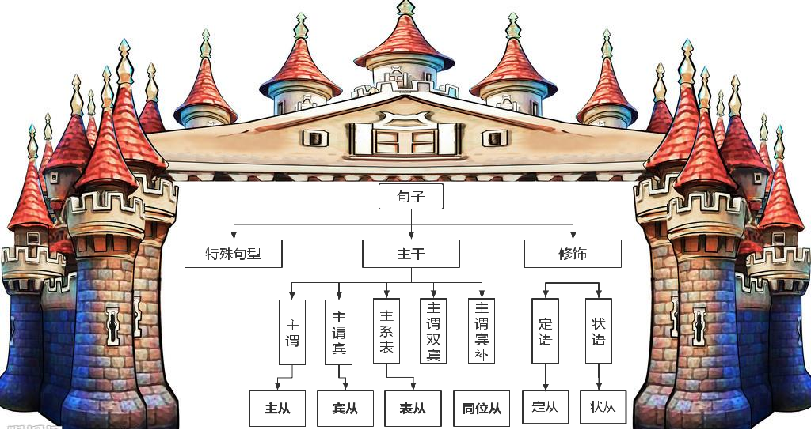

time: 00:13:26
表语从句(系动词 + that/6w + v)
...be (look/ seem/ appear/ sound/ remain...) that/ 6w... v
6w: who, what, where, when, whether, which
be动词变形:
am, is, are
was, were
will be, have been
time: 00:14:35
同位语从句
…n(抽象名词) that/ 6w… v
抽象名词：
the fact 事实
the phenomenon 现象
the idea 观点
the belief 观点(在这儿不是信仰的意思), = the idea
the truth 真相, 真理
the charge /tʃɑːdʒ/ n. 费用；电荷；掌管；控告；命令；负载 vt. 使充电；使承担；对…索费 vi. 充电；控告；索价；记在账上
the concept 观点, 概念
the proof 证据
time: 00:20:52
找出下列句子中的从句（主从？宾从？表从？同从？）
1. What was important to her was her family. 主从: Wh-开头基本都是主从, 后面跟动词was, 所以是主从
2. He came to see whether it got any better. 宾从: whether前方see是动词
3. That was what we did this morning? 表从: was + what That在这儿是指代词:那个, 不是主从
4. Is there any possibility that you could pick me up at the airport? 同位语从句: possibility + that
5. What worries him is how he can finish it within a week.
主从: Wh-开头, 后方跟动词 worries
表从: is + how
6. We’ve agreed on when and where we will go out for a picnic. 宾从: where 前方 + agreed on(.prep)
7. Whoever breaks the law shall be punished by the law. 主从: Wh-开头 + breaks动词
8. You must find out whose book it is. 宾从: whose 前方 + find out(.prep)
9. It is known to us all that the earth is round. 主从: 主从后置
10. You can rely on it that he will come to your help. 宾从
主语: You
谓语: can rely on
宾语: it(代词, 形式宾语)
真正宾语: that he will come to your help. //that引导的宾语从句, 宾语从句
time: 00:30:25
找出下方句子的从句
2. Whether the government should increase the financing power of pure science at the expense of technology or vice versa often depends on which issue is seen as the driving force.(1994)
Whether... 主从
witch: 宾从. 前方 + depends on(.prep)
谓语: often depends on, 主谓宾
often /ˈɒfn; ˈɒftən/ adv. 常常，时常；往往，大多
often是副词, 修饰动词 .n, 所以和后方动词划到一起
主语: Whether the government should increase the financing power or vice versa 主谓宾结构
should aux.助动词
宾语: which issue is seen as the driving force. 主谓 + 主补
is seen 宾语中小谓语动词, be done形式被动
as the driving force 补语, sb see A as B 把A看做B, B是A的补足语
A is seen as B A被看作B 宾补 =变成了=> 主补
翻译:
1.先翻译主语
Whether the government should increase the financing power (of pure science) (at the expense of technology) or vice versa
financing /ˈfaɪnænsɪŋ/ n. 融资；财务；筹措资金 v. 筹措资金；财政管理；从事金融活动（finance的ing形式）
pure /pjʊə(r)/ adj. 纯的；纯粹的；纯洁的；清白的；纯理论的
expense /ɪkˈspens/ n. 损失，代价；消费；开支 vt. 向……收取费用；把……记入费用账户 vi. 被花掉
expense of 以...为代价
technology /tekˈnɒlədʒi/ n. 技术；工艺；术语
vice /vaɪs/ n. 恶习；缺点；[机] 老虎钳；卖淫 prep. 代替 vt. 钳住 adj. 副的；代替的
versa /'vɜ:sə/ adv. 反之亦然（等于 vice versa）
vice versa adv. 反之亦然
=> 是否政府应该增加 金融力量
=> 是否政府应该增加 纯的科学 金融力量 //(of pure science)
=> 是否政府应该增加 以技术为代价 纯的科学 金融力量 //(at the expense of technology)
=> 是否政府应该增加 以技术为代价 纯的科学 金融力量 或者反之亦然 //or vice versa 1.5/2.0 分
=> 是否政府应该增加 (减少)技术为代价 纯科学的 财力 或者反之亦然
=> 是否政府应该增加 纯科学的 财力, (减少)技术(的投资)为代价 或者反之亦然
=> 是否政府增加纯科学 还是 增加技术 的财力
2.often depends on
often /ˈɒfn; ˈɒftən/ adv. 常常，时常；往往，大多
=> 经常取决于
3.翻译宾语
which issue is seen as the driving force.
force /fɔːs/ n. 力量；武力；军队；魄力 vt. 促使，推动；强迫；强加
driving force 驱动力
=> 哪个问题 被看作 驱动力量.
=> 是否政府增加纯科学 还是 增加技术 的财力 经常取决于 哪个问题 被看作 驱动力量.
time: 00:57:52
★★★5大写作板句— 主从+宾从★★★
是否人们应该选择A还是B通常取决于哪个有利。
Whether people should choose A at the expense of B or vice versa often depends on which issue is seen as the driving force.
例: 由于疫情影响, 为了健康, 经济不景气
Whether the govement should choose econommy at the expense of health or vice versa often depends on whice issue is seen as the driving force.
例: 考研, 或者找工作:hunting for jobs
Whether people should choose 考研 at the expense of 找工作 or vice versa often depends on which issue is seen as the driving force.
time: 01:17:01
8.核心篇: 修饰性从句分析

本 节 重 点 (修饰性从句)：
定 从 & 状 从
定语从句: .n + that/ wh-...
一、定语从句 (形容词性从句)
1、定语从句的实质和形式
.n + that/ wh-...
n. 是先行词
同位语从句 VS 定语从句
| 语法结构 | 含义 | 翻译 |
定语从句 | 连词作成分(去掉不完整) | 从属 | 的 或另起翻译: 此,这 |
同位语从句 | 连词不作成分 | 同等 | 即 or : |
time: 01:21:15
指出下方句子的 同位语从句 或 定语从句
① The news that I hated came early in the morning.
谓语动词: come
从句: that I hated, 去掉 that 后: I hated, hated是及物动词, 要跟宾语(宾语是前方那个news), 去掉that 不完整, 所以是: 定语从句
=> 我讨厌的消息一大早就来了. //that翻译成: 的
② The news that my flower was dead in the storm came early in the morning.
谓语动词: come
从句: my flower was dead in the storm, 去掉that后句子亦然完整, 主系表, 所以是: 同位语从句
=> 我的花在暴风雨中枯萎的消息一大早就传来了。 //有道
=> 这个消息: 我的花在暴风雨中枯萎了, 一大早就传来了。 //that 翻译成 :
③ The news that my flower died in the storm came early in the morning.
谓语动词: come
从句: my flower died int the storm, 去掉that后句子依然完整, 主谓, 所以是: 同位语从句
=> 这个消息: 我的花死于暴风雨中, 一大早就传来了.
④ The news that you told me came early in the morning.
谓语动词: come
从句: you told me, 去掉that后句子不完整, tell sb sth, me是间宾, 差一个直宾news: you told me the news, 所以是: 定语从句
=> 你告诉我的消息 一大早就传来了. 不要翻译成:你告诉我的消息 在早上早点来.
time: 01:30:18
3. These leaders are living proof that prevention works and that we can manage the health problems that come naturally with age.(2003)
谓语动词: are, living在这儿是 .adj 活生生的, 不是动词. 主系表
living /ˈlɪvɪŋ/
adj. 活的；现存的；在使用的；供生活起居用的；活跃的；逼真的；（诗、文，指水）流淌不息的
n. 生计；生活方式；（尤指旧时）有俸金住房的牧师职位；活着的人
v. 生活；居住；度过；继续存在，留存，铭记；享受充实而令人兴奋的生活（live 的现在分词）
proof /pruːf/ n. 证明；证据；校样；考验；验证；试验 adj. 防…的；不能透入的；证明用的；耐…的 vt. 试验；校对；使不被穿透
prevention /prɪˈvenʃn/ n. 预防；阻止；妨碍
manage vt. 管理；经营；控制；设法 vi. 处理；应付过去
naturally /ˈnætʃrəli/ adv. 自然地, 自然而然地, 轻而易举, 天生地
3层从句:
that prevention works 主谓, 同位语从句
and 并列连词, and两边的句型必须一致, 都是同位语从句
we can manage the health problems 主谓宾, 同位语从句
come naturally with age. 定语从句
=> 这些领袖是活的证据
=> 预防 works起作用,奏效
=> 和 我们能管理健康问题
=> 来 自然地 和年龄 => 随着年龄自然地来到的
=> 这些领袖是活的证据: 预防奏效 和 我们能够管理 随年龄自然产生的健康问题.
=> 这些领袖是活的证据: 预防奏效 并且 我们能够处理 随年龄自然产生的健康问题.
time: 01:44:05
★★5大写作板句— 同从+非限★★★
这些前辈/企业家/社会精英是真实的例子：(主题词) 奏效并且我们能够充分利用它，这对于人们的个人成长、学术成就和职业发展乃至社会进步与繁荣产生了至关重要的影响。
These pioneers/entrepreneurs/social elites are living proof that 主题词.n works and we can take full advantage of it, which would exert a fundamental and instrumental/important and significant/crucial and essential influence on personal growth, academic performance and vocational development as well as social progress and prosperity.
pioneer /ˌpaɪəˈnɪə(r)/ n. 前辈,先锋；拓荒者 vt. 开辟；倡导；提倡 vi. 作先驱
entrepreneur /ˌɒntrəprəˈnɜː(r)/ n. 企业家；承包人；主办者
elite /eɪˈliːt; ɪˈliːt/ n. 精英；精华；中坚分子
take full advantage of 充分利用
exert /ɪɡˈzɜːt/ vt. 运用，发挥；施以影响
would exert (会)产生
fundamental /ˌfʌndəˈmentl/ adj. 基本的，根本的 n. 基本原理；基本原则
instrumental /ˌɪnstrəˈmentl/ adj. 乐器的；有帮助的,有用的；仪器的，器械的 n. 器乐曲；工具字，工具格
fundamental and instrumental 至关重要的
significant /sɪɡˈnɪfɪkənt/ adj. 重大的；有效的；有意义的；值得注意的；意味深长的 n. 象征；有意义的事物
crucial /ˈkruːʃl/ adj. 重要的；决定性的；定局的；决断的
essential /ɪˈsenʃl/ adj. 基本的；必要的；本质的；精华的 n. 本质；要素；要点；必需品
influence /ˈɪnfluəns/ n. 影响；势力；感化；有影响的人或事 vt. 影响；改变
personal /ˈpɜːsənl/ adj. 个人的；身体的；亲自的 n. 人事消息栏；人称代名词
growth /ɡrəʊθ/ n. 成长,增长；发展；生长；种植
academic /ˌækəˈdemɪk/ adj. 学术的；理论的；学院的 n. 大学生，大学教师；学者
performance /pəˈfɔːməns/ n. 性能；绩效；表演；执行；表现, 业绩, 成就
vocational /vəʊˈkeɪʃənl/ adj. 职业的，行业的, 职业的
as well as 也；和…一样；不但…而且,乃至
social progress 社会进步
prosperity /prɒˈsperəti/ n. 繁荣，成功